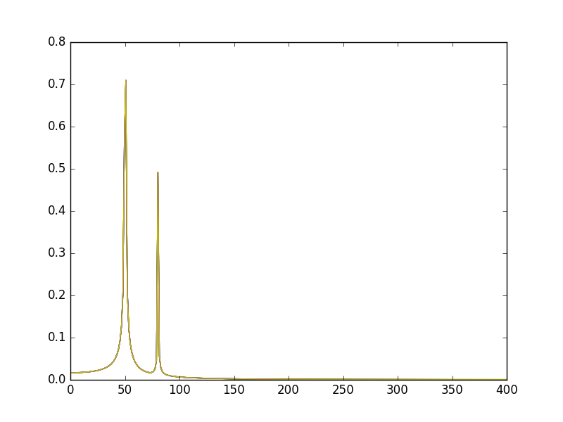

Numpy and Scipy Packages
Sebastian Hahn
Numpy
- The numpy package is used in almost all numerical computation using Python
- It is a package that provide high-performance vector, matrix and higher-dimensional data structures
- It is implemented in C and Fortran so when calculations are vectorized (formulated with vectors and matrices), performance is very good
To use numpy you need to import the module
import numpy as np print("Numpy version {:}".format(np.__version__))
Numpy version 1.8.2
Getting started
Creating Numpy arrays
There are a number of ways to initialize new numpy arrays, for example from
- a Python list or tuples
- using functions that are dedicated to generating Numpy arrays, such as np.arange, np.linspace, etc.
- reading data from files
From lists
# a vector: the argument to the function is a Python list v = np.array([1, 2, 3, 4]) print(v)
>>> [1 2 3 4]
# a matrix: the argument to the function is a nested Python list M = np.array([[1, 2], [3, 4]]) print(M)
>>> [[1 2] [3 4]]
Difference between v and M
print(type(v), type(M))
(<type 'numpy.ndarray'>, <type 'numpy.ndarray'>)
The difference between the v and M arrays is only their shapes. The information
about the shape of an array by using the ndarray.shape property.
print(v.shape, M.shape)
((4,), (2, 2))
Numpy array vs. lists
So far the numpy.ndarray looks awefully much like a Python list (or nested
list). Why not simply use Python lists for computations instead of a new array
type?
There are several reasons:
- Python lists are very general. Each element can be any kind of object. They are dynamically typed. They do not support mathematical functions such as matrix and dot multiplications, etc. Implementating such functions for Python lists would not be very efficient because of the dynamic typing
- Numpy arrays are statically typed and homogeneous. The type of the elements is determined when the array is created.
- Numpy arrays are memory efficient and element access is fast.
- Because of the static typing, fast implementation of mathematical functions such as multiplication and addition of numpy arrays can be implemented in a compiled language (C and Fortran is used).
Type of an array
Using the ndarray.dtype (data type) property, we can see the type of an array:
print(v.dtype, M.dtype)
(dtype('int64'), dtype('int64'))
We get an error if we try to assign a value of an uncastable type to an element in a Numpy array:
M[0, 0] = "hello"
Traceback (most recent call last): File "<stdin>", line 1, in <module> ValueError: invalid literal for long() with base 10: 'hello'
But be aware that the type is defined by the array at the initialization and won't be changed if a value from another type is assigned
M[0, 0] = 1.2345 print(M[0, 0], M.dtype)
(1, dtype('int64'))
However, the data type can be changed later if it is desired (e.g. using numpy.ndarray.astype).
x = M.astype(np.float32) print(x, x.dtype)
(array([[ 1., 2.],
[ 3., 4.]], dtype=float32), dtype('float32'))
If we want, we can explicitly define the data type of the array during creation,
using the dtype keyword argument.
M = np.array([[1, 2], [3, 4]], dtype=np.complex) print(M)
[[ 1.+0.j 2.+0.j] [ 3.+0.j 4.+0.j]]
Common types that can be used with dtype are, e.g.: np.int8, np.int16,
np.int32, np.int64, np.uint8, np.uint16, np.uint32, np.uint64,
np.float32, np.float64, np.complex, np.bool, np.object, etc.
Using array-generating functions
For larger arrays it is unpractical to initialize the data manually, using explicit python lists. Instead we can use one of the many functions in Numpy that generate arrays of different forms. Some of the more common ones are:
Ones and Zeros
Numerical ranges
Random numbers
np.random.rand, np.random.randn
Building matrices
np.identity, np.diag, np.tri, np.tril, p.triu
From existing data
Ones and Zeros
x = np.zeros(3, dtype=np.int) print(x)
[0 0 0]
x = np.ones((3, 3), dtype=np.float) print(x)
[[ 1. 1. 1.] [ 1. 1. 1.] [ 1. 1. 1.]]
Numerical ranges
# creates a range, arguments: [start=0], stop, [step=1] x = np.arange(10) print(x)
>>> [0 1 2 3 4 5 6 7 8 9]
x = np.arange(2, -1, -0.5) print(x)
[ 2. 1.5 1. 0.5 0. -0.5]
# using linspace, both end points ARE included x = np.linspace(0, 10, 11) print(x)
>>> [ 0. 1. 2. 3. 4. 5. 6. 7. 8. 9. 10.]
x = np.logspace(0, 10, 11, base=10) print(x)
[ 1.00000000e+00 1.00000000e+01 1.00000000e+02 1.00000000e+03 1.00000000e+04 1.00000000e+05 1.00000000e+06 1.00000000e+07 1.00000000e+08 1.00000000e+09 1.00000000e+10]
Random numbers
# each element is from the uniform random distribution [0,1] x = np.random.rand(5, 5) print(x)
>>> [[ 0.92819053 0.78096331 0.88454484 0.15025367 0.86327508] [ 0.52152967 0.6903908 0.61029897 0.24716016 0.92762323] [ 0.83878385 0.78146169 0.30581027 0.34674281 0.95222171] [ 0.06496472 0.51497669 0.01277921 0.55690918 0.27095144] [ 0.42779013 0.35234505 0.1225685 0.24785118 0.84325914]]
The standard normal distribution is available as np.random.randn
Building matrices
x = np.diag([1, 2, 3]) # the diagonal of an otherwise zero matrix print(x)
[[1 0 0] [0 2 0] [0 0 3]]
y = np.diag(x) print(y)
[1 2 3]
# ones at and below the given diagonal and zeros elsewhere x = np.tri(3) print(x)
>>> [[ 1. 0. 0.] [ 1. 1. 0.] [ 1. 1. 1.]]
# Upper triangle of an array. x = np.triu(np.ones((3, 3))*2) print(x)
>>> [[ 2. 2. 2.] [ 0. 2. 2.] [ 0. 0. 2.]]
More properties of the numpy arrays
M = np.ones((3, 3), dtype=np.uint8) * 21 print(M.dtype) M.itemsize # bytes per element
uint8 1
M.nbytes # number of bytes
9
M.ndim # number of dimensions
2
Manipulating arrays
- Basic indexing and slicing
- Advanced indexing
- Index arrays
- Boolean index arrays
Basic indexing
Array indexing refers to any use of the square brackets [] to index array
values. There are many options to indexing, which give Numpy indexing great
power, but with power comes some complexity and the potential for confusion.
We can index elements in an array using the square bracket and indices:
# v is a vector, and has only one dimension, taking one index v = np.arange(10) print(v[0], v[-2])
>>> (0, 8)
Basic indexing
Unlike lists and tuples, Numpy arrays support multidimensional indexing for multidimensional arrays. That means that it is not necessary to separate each dimension’s index into its own set of square brackets.
v.shape = (2, 5) print(v) # v is now a 2 dimensional array, taking two indices print(v[1, 1]) # same as v[1][1]
[[0 1 2 3 4] [5 6 7 8 9]] ... 6
Basic indexing
Note that if one indexes a multidimensional array with fewer indices than dimensions, one gets a subdimensional array. For example:
print(v[0])
[0 1 2 3 4]
The same thing can be achieved with using :
print(v[0, :])
[0 1 2 3 4]
Basic indexing
It must be noted that the returned array is not a copy of the original, but points to the same values in memory as does the original array. In the next example, the 1-D array at the first position (0) is returned.
print(v[0])
[0 1 2 3 4]
So using a single index on the returned array, results in a single element being returned. That is:
print(v[0][2])
2
Basic indexing
Note that v[0, 2] = v[0][2] though the second case is more inefficient a new
temporary array is created after the first index that is subsequently indexed
by 2.
Slicing
It is possible to slice and stride arrays to extract arrays of the same number of dimensions, but of different sizes than the original. The slicing and striding works exactly the same way it does for lists and tuples except that they can be applied to multiple dimensions as well.
x = np.arange(10) print(x[2:5]) print(x[:-7]) print(x[1:7:2])
[2 3 4] [0 1 2] [1 3 5]
Views
Note that slices of arrays do not copy the internal array data but also produce new views of the original data.
x = np.arange(5) y = x[::2] print(x) print(y) y[0] = 3 print(x) print(y)
>>> [0 1 2 3 4] [0 2 4] >>> [3 1 2 3 4] [3 2 4]
Making changes to the view changes the underlying array!
Views
New view of array with the same data and is used two different ways:
a.view(some_dtype)ora.view(dtype=some_dtype)constructs a view of the array's memory with a different data-type. This can cause a reinterpretation of the bytes of memory.a.view(ndarray_subclass)ora.view(type=ndarray_subclass)just returns an instance of ndarray_subclass that looks at the same array (same shape, dtype, etc.) This does not cause a reinterpretation of the memory.
Advanced indexing
It is possible to index arrays with other arrays for the purposes of selecting lists of values out of arrays into new arrays. There are two different ways of accomplishing this.
- One uses one or more arrays of index values.
- The other involves giving a boolean array of the proper shape to indicate the values to be selected.
Index arrays are a very powerful tool that allow one to avoid looping over individual elements in arrays and thus greatly improve performance.
Index arrays
The use of index arrays ranges from simple, straightforward cases to complex, hard-to-understand cases. For all cases of index arrays, what is returned is a copy of the original data, not a view as one gets for slices.
x = np.arange(10, 1, -1) y = x[np.arange(0, 8, 2)] print(x) print(y) y[0] = 55 print(x) print(y)
>>> [10 9 8 7 6 5 4 3 2] [10 8 6 4] >>> [10 9 8 7 6 5 4 3 2] [55 8 6 4]
Boolean index arrays
Boolean arrays used as indices are treated in a different manner entirely than index arrays. Boolean arrays must be of the same shape as the initial dimensions of the array being indexed.
y = np.arange(10) b = y > 5 print(b, y[b])
>>> (array([False, False, False, False, False, False, True, True, True, True], dtype=bool), array([6, 7, 8, 9]))
Combining index arrays with slices
Index arrays may be combined with slices. For example:
y = np.arange(64).reshape(8, 8) print(y[np.array([0,2,4]),1:3])
[[ 1 2] [17 18] [33 34]]
Likewise, slicing can be combined with broadcasted boolean indices:
b = y < 10 print(y[b[:, 1], 1:3])
[[ 1 2] [ 9 10]]
Structural indexing tools
To facilitate easy matching of array shapes with expressions and in assignments,
the np.newaxis object can be used within array indices to add new dimensions
with a size of 1. For example:
y = np.ones((3, 3)) print(y.shape) print(y[:,np.newaxis,:].shape)
(3, 3) (3, 1, 3)
Linear algebra
Vectorizing code is the key to writing efficient numerical calculation with Python/Numpy. That means that as much as possible of a program should be formulated in terms of matrix and vector operations, like matrix-matrix multiplication.
Scalar-array operations
We can use the usual arithmetic operators to multiply, add, subtract, and divide arrays with scalar numbers.
v = np.arange(5) print(v * 2, v + 3, v / 2., v - 5)
(array([0, 2, 4, 6, 8]), array([3, 4, 5, 6, 7]), array([ 0. , 0.5, 1. , 1.5, 2. ]), array([-5, -4, -3, -2, -1]))
Element-wise array-array operations
When we add, subtract, multiply and divide arrays with each other, the default behaviour is element-wise operations:
m = np.arange(9).reshape(3, 3) v = np.arange(3) print(m * m) print(m ** 2) print(m * v)
>>> [[ 0 1 4] [ 9 16 25] [36 49 64]] [[ 0 1 4] [ 9 16 25] [36 49 64]] [[ 0 1 4] [ 0 4 10] [ 0 7 16]]
Matrix algebra
We can either use the np.dot function, which applies a matrix-matrix, matrix-vector, or inner vector multiplication to its two arguments:
print(np.dot(m, v))
[ 5 14 23]
For 2-D arrays it is equivalent to matrix multiplication, and for 1-D arrays to inner product of vectors.
Matrix algebra
Alternatively, we can cast the array objects to the type np.matrix. This changes the behavior of the standard arithmetic operators +, -, * to use matrix algebra.
M = np.matrix(m) vec = np.matrix(v).T # make it a column vector print(M * vec)
>>> [[ 5] [14] [23]]
Matrix algebra
More examples
# inner product print(np.dot(v, v)) print(vec.T * vec)
5 [[5]]
# with matrix objects, standard matrix algebra applies print(vec + M * vec)
[[ 5] [15] [25]]
Matrix computations
Inverse: np.linalg.inv
M = np.matrix([[4, 2, 9], [11, 2, 3], [9, 3, 1]]) print(np.linalg.inv(M))
[[-0.05035971 0.17985612 -0.08633094] [ 0.11510791 -0.55395683 0.62589928] [ 0.10791367 0.04316547 -0.10071942]]
Determinant: np.linalg.det
print(np.linalg.det(M))
139.0
Mathematical functions
Exponents and logarithms, trigonometric functions
Linear algebra
Handling complex numbers
Floating functions, and miscellaneous
- np.floor, np.ceil, np.isnan, np.sqrt, np.convolve, …
Data processing
Often it is useful to store datasets in Numpy arrays. Numpy provides a number of functions to calculate statistics of datasets in arrays.
Some examples
x = np.arange(10) print(np.sum(x))
45
print(np.mean(x))
4.5
print(np.var(x))
8.25
Reshaping, resizing and stacking arrays
The shape of an Numpy array can be modified without copying the underlaying data, which makes it a fast operation even for large arrays.
Reshaping
x = np.arange(24) print(x)
[ 0 1 2 3 4 5 6 7 8 9 10 11 12 13 14 15 16 17 18 19 20 21 22 23]
v = np.reshape(x, (4, 6)) print(v)
[[ 0 1 2 3 4 5] [ 6 7 8 9 10 11] [12 13 14 15 16 17] [18 19 20 21 22 23]]
Resizing
v = np.array([[0, 1], [2, 3]]) x = np.resize(v, (1,4)) print(x)
>>> [[0 1 2 3]]
Repeating and Stacking
Using function np.repeat, np.tile, np.vstack, np.hstack, and np.concatenate we can create larger vectors and matrices from smaller ones:
v = np.array([[1, 2], [3, 4]]) # repeat each element 3 times print(np.repeat(v, 3))
... [1 1 1 2 2 2 3 3 3 4 4 4]
# tile the matrix 3 times print(np.tile(v, 3))
[[1 2 1 2 1 2] [3 4 3 4 3 4]]
Stacking
v = np.array([[0, 1], [2, 3]]) w = np.array([[5, 6]]) print(np.concatenate((v, w), axis=0))
>>> [[0 1] [2 3] [5 6]]
print(np.concatenate((v, w.T), axis=1))
[[0 1 5] [2 3 6]]
Stacking
v = np.array([[0, 1], [2, 3]]) w = np.array([[5, 6]]) x = np.vstack((v, w)) print(x)
>>> >>> [[0 1] [2 3] [5 6]]
x = np.hstack((v, w.T)) print(x)
[[0 1 5] [2 3 6]]
Copy and "deep copy"
To achieve high performance, assignments in Python usually do not copy the underlaying objects. This is important for example when objects are passed between functions, to avoid an excessive amount of memory copying when it is not necessary (technical term: pass by reference).
Without copy
A = np.array([[1, 2], [3, 4]]) # now B is referring to the same array data as A B = A # changing B affects A B[0, 0] = 10 print(A)
... >>> ... >>> [[10 2] [ 3 4]]
print(B)
[[10 2] [ 3 4]]
Copy
If we want to avoid this behavior, so that when we get a new completely independent object B copied from A, then we need to do a so-called "deep copy" using the function copy:
A = np.array([[1, 2], [3, 4]]) B = A.copy() # now, if we modify B, A is not affected B[0, 0] = -5 print(A)
>>> ... >>> [[1 2] [3 4]]
print(B)
[[-5 2] [ 3 4]]
Iterating over array elements
Generally, we want to avoid iterating over the elements of arrays whenever we can (at all costs). The reason is that in a interpreted language like Python (or MATLAB), iterations are really slow compared to vectorized operations.
v = np.array([1,2,3,4]) for element in v: print(element)
... ... 1 2 3 4
Some Numpy functions
np.where
The position index can be found using the np.where function
x = np.arange(10) + 20 indices = np.where((x >= 20) & (x < 25)) print(indices)
>>> (array([0, 1, 2, 3, 4]),)
print(x)
[20 21 22 23 24 25 26 27 28 29]
np.choose
Constructs an array by picking elements form several arrays using np.choose
which = [1, 0, 1, 0] choices = [[-2, -2, -2, -2], [5, 5, 5, 5]] x = np.choose(which, choices) print(x)
>>> >>> [ 5 -2 5 -2]
np.take
Take elements from an array along an axis (for completeness, the function np.take does the same thing as "fancy" indexing (i.e. indexing arrays using arrays); however it can be easier to use if you need elements along a given axis.
v = np.array([4, 3, 5, 7, 6, 8]) indices = np.array([0, 1, 4]) x = np.take(v, indices) print(x) print(v[indices])
>>> >>> [4 3 6] [4 3 6]
np.select
Return an array drawn from elements in choicelist, depending on conditions using np.select.
x = np.arange(10) condlist = [x<3, x>5] choicelist = [x, x**2] v = np.select(condlist, choicelist) print(v)
>>> >>> >>> [ 0 1 2 0 0 0 36 49 64 81]
np.place
Change elements of an array based on conditional and input values using np.place.
m = np.arange(6).reshape(2, 3) print(m) np.place(m, m>2, [44, 55]) print(m)
[[0 1 2] [3 4 5]] >>> [[ 0 1 2] [44 55 44]]
And many more …
The Numpy reference manual gives details on functions, modules, and objects included in Numpy, describing what they are and what they do.
Further Numpy topics
- Masked arrays
- Numpy IO (will be covered in another session)
- Datetime and timedeltas
- Numpy polynomials functions
- Sorting, searching, counting
- Logic functions
- More on statistics
- Structured arrays (aka "Record arrays")
- Byte-swapping
- Subclassing ndarray
- and many more …
Scipy
Scipy (Scientific Computing Tools for Python) is a Python-based ecosystem of open-source software for mathematics, science, and engineering. In particular, these are some of the core packages:
- Python (2.x >= 2.6 or 3.x >= 3.2)
- NumPy (>= 1.6)
- Scipy library (>= 0.10)
- Matplotlib (>= 1.1)
- dateutil
- pytz
Scipy library
The Scipy library is one of the core packages that make up the Scipy stack. It provides many user-friendly and efficient numerical routines such as routines for numerical integration and optimization.
Example I - Interpolation (scipy.interpolate)
There are several general interpolation facilities available in Scipy, for data in 1, 2, and higher dimension
from scipy.interpolate import interp1d x = np.linspace(0, 10, 10) y = np.cos(-x**2 / 8.0) f = interp1d(x, y, kind='cubic') print(y[:4])
>>> >>> >>> [ 1. 0.98811613 0.81545357 0.18090587]
print(f(x)[:4])
[ 1. 0.98811613 0.81545357 0.18090587]
Example II - Statistics (scipy.stats)
This module contains a large number of probability distributions as well as a growing library of statistical functions. There are several general
from scipy.stats import norm # The probability density function for norm is: # norm.pdf(x) = exp(-x**2/2)/sqrt(2*pi) # Calculate a few first moments mean, var, skew, kurt = norm.stats(moments='mvsk') print(mean, var, skew, kurt)
>>> ... ... >>> ... >>> (array(0.0), array(1.0), array(0.0), array(0.0))
Example II - Statistics (scipy.stats)
import numpy as np import matplotlib.pyplot as plt x = np.linspace(norm.ppf(0.01), norm.ppf(0.99), 100) plt.plot(x, norm.pdf(x), 'r-', lw=2) plt.savefig('./graphics/norm_pdf.png')

Numpy exercise
- Show that A * A^-1 = I
- Find indices of non-zero elements from [1, 2, 0, 0, 4, 0].
- Declare a 3x3 identity matrix.
- Create 1000 random values from a normal distribution.
- Calculate mean, std, var from a vector of your choice.
Solutions
1.
A = np.array([[1, 8, 3], [42, 2, 1], [22, 21, 22]]) print(np.dot(A, np.linalg.inv(A)))
[[ 1.00000000e+00 2.77555756e-17 -8.32667268e-17] [ 0.00000000e+00 1.00000000e+00 0.00000000e+00] [ -4.44089210e-16 0.00000000e+00 1.00000000e+00]]
2.
v = np.array([1, 2, 0, 0, 4, 0]) print(np.nonzero(v))
(array([0, 1, 4]),)
3.
print(np.eye(3))
[[ 1. 0. 0.] [ 0. 1. 0.] [ 0. 0. 1.]]
4.
x = np.random.randn(1000) print(x[:10], x.size)
(array([-2.21447447, 1.17986109, -0.5654896 , -0.09379635, 1.38616844,
-0.87599041, 1.1731627 , -0.74976718, 0.34496742, 1.10023523]), 1000)
5.
x = np.random.randn(1000) print(x.mean(), x.std(), x.var())
(-0.022302750224616818, 1.0171936389307741, 1.03468289908123)
Scipy exercise
- Define a function of your choice (e.g. x^2 + 10 * sin(x)) and find the roots (HINT: optimize.root)
- Calculate the Fourier Transform of the signal = sin(50 * 2 * pi * x) + sin(80 * 2 * pi * x), with x defined between 0 and N=1200, and a temporal sampling of T=1.0/1200.0
Solutions
1. Finding roots
from scipy import optimize def func(x): return x**2 + 10 * np.sin(x) sol = optimize.root(func, -3) print(sol.x) sol = optimize.root(func, 1) print(sol.x)
>>> ... ... >>> >>> [-2.47948183] >>> >>> [ 0.]
2. FFT exercise
import numpy as np from scipy.fftpack import fft import matplotlib.pyplot as plt # Number of samplepoints N = 600 # sample spacing T = 1.0 / 800.0 x = np.linspace(0.0, N*T, N) y = np.sin(50.0 * 2.0*np.pi*x) + 0.5*np.sin(80.0 * 2.0*np.pi*x) yf = fft(y) xf = np.linspace(0.0, 1.0/(2.0*T), N/2) plt.plot(xf, 2.0/N * np.abs(yf[0:N/2])) plt.grid() plt.savefig('./graphics/fft_example.png')
2. FFT exercise
